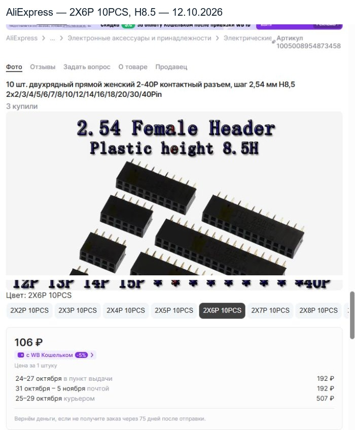

Подбор проверен 12 октября 2026. Вариант вилки принят пользователем. Новая розетка и размерная проверка представлены для финальной проверки; посадочные места, трассировка и BOM пока не изменены.
| Деталь и выбранный вариант | Цена | Наличие |
|---|---|---|
| E-SIMPO — L35mm A3C6, 2x6P | 1449 ₽ за лот 50 шт. | 99+, покупка доступна |
| MTJ — 2X6P 10PCS, корпус H8.5 | 106 ₽ за выбранный набор 10 шт. | 99+, покупка доступна |
Для пяти устройств: один лот вилок и один набор розеток — 1555 ₽ за товары. Показанная доставка двумя заказами: 363+192=555 ₽; ориентир с доставкой 2110 ₽. Цена окончательного оформления заказа не проверялась. Вариант розетки и заголовок прямо задают 10PCS/10 шт.; общая подпись платформы «Цена за 1 штуку» относится к выбранной продажной единице.
| Величина | Размер, мм |
|---|---|
| Полная длина металлического штыря | 35 |
| Хвост под POWER | 3 |
| Кончики над POWER | 32 |
| Свободный конец над верхней пластиковой планкой | 6 |
| Высота розетки | 8,5 |
| Расстояние POWER F → LOGIC F | 36,02 |
| Номинальный ввод | 32+8,5−36,02=4,48 |
| Верхняя пластмассовая планка → вход розетки | 1,52 |
| Экран → верхняя пластмассовая планка | 3,48 |
Экран находится на высоте 18,50–20,02 мм от POWER, верхняя пластиковая планка — 23,50–26,00 мм. Через экран проходят только штыри. Корпус розетки начинается на высоте 27,52 мм от POWER. Стойки 18/15 мм и шайбы сохраняются. Наружные поверхности крайних плат: 39,06 мм; полная текущая огибающая с крепежом: 45,56 мм.
Расчёт длины: L=36,02+3−8,5+4,50=35,02 мм. Выбираем продаваемый L35mm A3C6, без подрезки штырей и без изменения высоты стоек.
| Вилка | Положение верхней пластиковой планки | Результат |
|---|---|---|
| L30 | 18,50–21,00 мм | Пересекает экран, не достигает розетки |
| L35 | 23,50–26,00 мм | Номинальная геометрия подходит |
| L40 | 28,50–31,00 мм | Планка сталкивается с розеткой |
Корпус 15,64±0,30 × 5,00 × 8,50 мм; межцентровое расстояние крайних контактов в ряду 12,70±0,20 мм; шаг 2,54 мм. Хвосты 3,15±0,25 мм, сечение паяемого хвоста 0,60×0,40 мм. Ток 3 А, сопротивление контакта максимум 20 мОм, рабочая температура −40…+105 °C.
Подтверждена номинальная геометрия пары. Точный диапазон допустимого ввода и сечение ответного штыря продавцы не задают; у высоты корпуса розетки 8,50 мм отсутствует собственный допуск. Размер 0,60×0,40 относится к паяемому хвосту розетки. Перед выпуском платы нужны проверка сопряжения образцов, фактического межплатного расстояния и прямолинейности штырей. Данные Samtec не приписываются этой паре. Проходные отверстия экрана пока не внесены в CAD.
